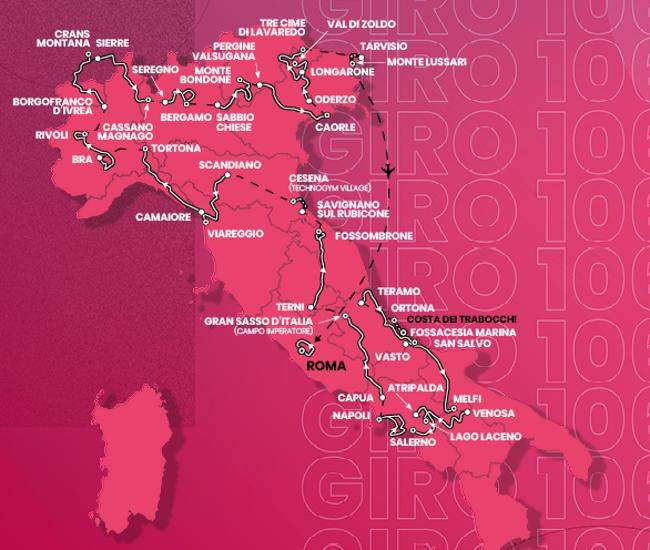

| Fecha | Recorrido | Distancia (Km) | Desnivel |
|---|---|---|---|
| 6 De Mayo | Fossacesia - Ortona | 19,6 | 100 m |
| 7 De Mayo | Teramo - San Salvo | 202 | 1400 m |
| 8 De Mayo | Vasto - Melfi | 216 | 1400 m |
| 9 De Mayo | Venosa - Laceno | 175 | 3500 m |
| 10 De Mayo | Atripalda - Saleno | 171 | 2400 m |
| 11 De Mayo | Nápoles - Nápoles | 162 | 2800 m |
| 12 De Mayo | Capua - Grab Sasso d'Italia | 218 | 3900 m |
| 13 De Mayo | Terni - Fossombrone | 207 | 2500 m |
| 14 De Mayo | Savignano sul Rubicone - Cesena | 35 | 50 m |
| 15 De Mayo | Día de Descanso | ||
| 16 De Mayo | Scandiano - Viareggio | 196 | 2600 m |
| 17 De Mayo | Camaiore - Torona | 219 | 2100 m |
| 18 De Mayo | Bra - Rivoli | 179 | 2300 m |
| 19 De Mayo | Borgofranco d'Ivrea - Crans-Montana | 74,6 | 2500 m |
| 20 De Mayo | Sierre - Cassano Magnago | 193 | 1600 m |
| 21 De Mayo | Seregno - Bérgamo | 195 | 3600 m |
| 22 De Mayo | Día de Descanso | ||
| 23 De Mayo | Sabbio Chiese - Monte Bondone | 203 | 5200 m |
| 24 De Mayo | Pergine Valsugana - Caorle | 195 | 300 m |
| 25 De Mayo | Oderzo - Val di Zoldo | 161 | 3700 m |
| 26 De Mayo | Longarone - Tres Cimas de Lavaredo | 183 | 5400 m |
| 27 De Mayo | Tarvisio - Monte Lussari | 18,6 | 1050 m |
| 28 De Mayo | Roma - Roma | 126 | 500 m |